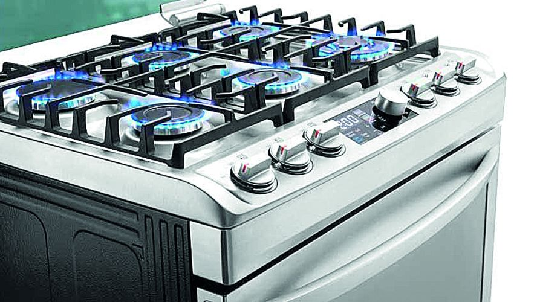

Servicio Técnico LG
Somos los mejores en soporte técnico LG en línea marrón. Muchos electrodomésticos pierden la garantía o por mal uso no los cubre. ¡No te preocupes, estamos para atenderte en cualquier situación!
Nuestro servicio técnico especializado en la reparación y mantenimiento de televisores, ofreciendo soluciones a domicilio. Nos dedicamos a resolver cualquier inconveniente relacionado con televisores mediante un servicio autorizado que utiliza repuestos originales adquiridos directamente de las marcas.
¡Contáctanos y deja tu equipo funcionando como nuevo!

¿Tu lavadora o secadora dejó de funcionar? Contamos con técnicos especializados en diagnóstico, mantenimiento y reparación de todas las marcas.
Atendemos fallas de lavado, centrifugado, secado, fugas de agua, ruidos extraños, problemas electrónicos y mucho más.
¡Contáctanos y devuelve el funcionamiento a tus electrodomésticos!

¿Tu nevera no enfría, hace ruidos extraños o presenta alguna falla? Ofrecemos servicio técnico especializado en diagnóstico, mantenimiento y reparación de neveras de todas las marcas.
¡Contáctanos y recupera el buen funcionamiento de tu nevera!
Atendemos problemas de enfriamiento, congelación, fugas, compresor, termostato y tarjetas electrónicas. Servicio a domicilio, atención rápida y repuestos de calidad.
¿Tu estufa u horno presenta fallas? Brindamos servicio técnico especializado en diagnóstico, mantenimiento y reparación de estufas y hornos de todas las marcas.
¡Contáctanos y deja tu equipo funcionando como nuevo!
Solucionamos problemas de encendido, quemadores, horno que no calienta, fugas de gas, resistencias, termostatos y fallas electrónicas. Servicio a domicilio, atención rápida y repuestos de calidad.

RESEÑAS DE NUESTROS CLIENTE


“Un servicio diligente, confiable y eficaz que realiza la reparación de manera adecuada, en mi caso, con mi televisor“

“Mi televisor quedo en perfecto estado, gracias por el servicio“

“Buen servicio, el tecnico soluciono el problema de mi tv “
Somos una compañía independiente de Colombia dedicada a brindar servicios técnicos para la reparación, asistencia y cuidado de televisores.
Nuestra empresa no está asociada exclusivamente a una marca en particular, sino que ofrece servicios para múltiples marcas. No somos un centro de servicio autorizado de una empresa específica, sino que proporcionamos mantenimiento a televisores de todas las marcas disponibles en el mercado.
Los técnicos que conforman nuestro equipo poseen una trayectoria de más de una década en el ámbito de la reparación de televisores. Esto garantiza que tus dispositivos electrónicos están siendo atendidos por profesionales con amplia experiencia y conocimiento en el campo.
Lunes a Sabado
08:00 am – 05:00 pm